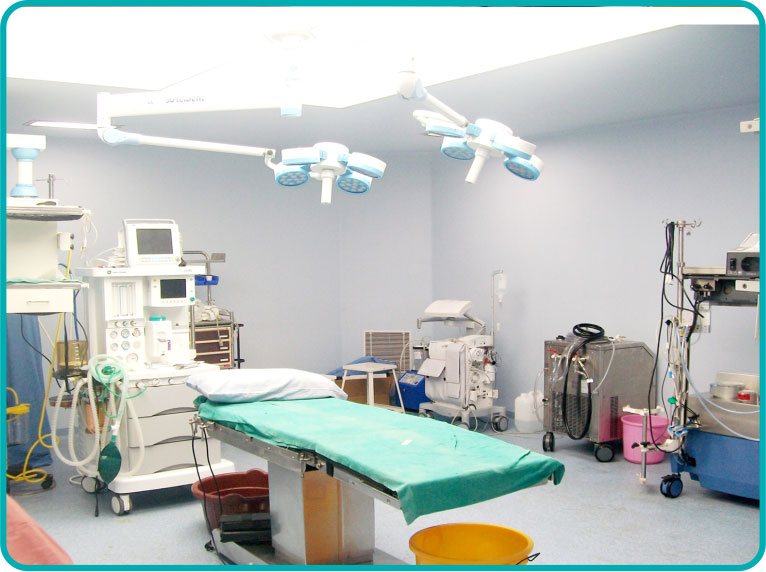
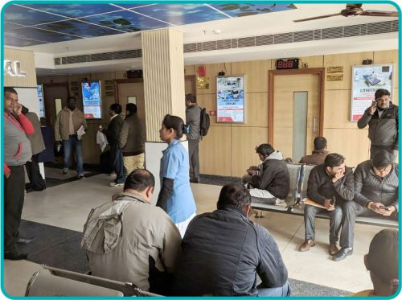
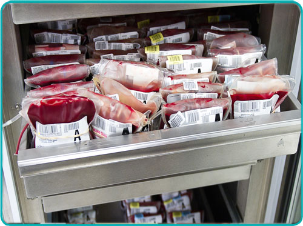
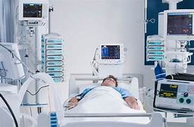
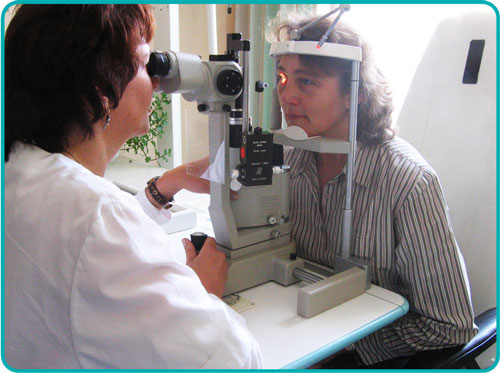
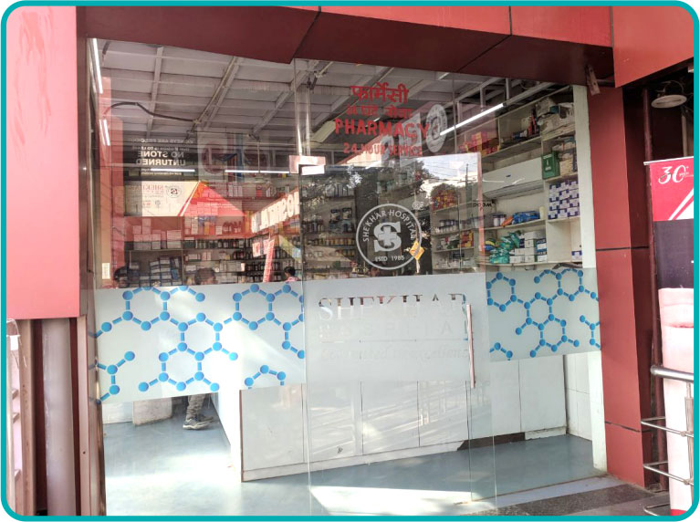
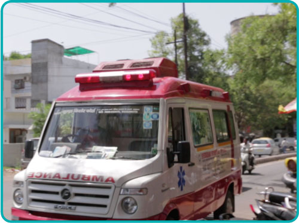

FACILITIES
CARDIOLOGY/ CARDIO THORACIC SURGERY

The Cardiology department at Hospital specializes in interventional cardiology, electrophysiology and
non-invasive cardiology, as well as cardiac by-pass and minimally invasive surgery. Further, the team of
cardiothoracic and vascular surgeons specializes in conducting cardiac rehabilitation outpatient program that is
carefully designed to help heart attack survivors, patients suffering from heart diseases, or people who
underwent any cardiac surgery. Moreover, the team holds the capabilities to conduct carotid/coronary angioplasty
stenting, and coronary bypass surgeries.
OPD for 36 Specialities

We are there to advice you on your health. Hospital offers OPD services to all the patients who require medical
consultations and other allied services. The hospital is having 35 OPD Chambers and patients can consult
specialist doctors between 9:00 am and 3:00 pm every day to know medical, surgical or allied(physiotherapy,
dietetics) consultation and expert opinion.
In an OPD session, patients at times, also undergo examination whenthey are examined for their conditions.With
the radiology, microbiology and pathology laboratories within the campus, the diagnostic facilities can also be
availed round the clock, all the days. The OPD chambers of Hospital is one of the most valuable departments of
hospital, not just in terms of revenue generation but for the image of the hospital.
Blood Bank

The Blood Bank of Hospital has a unique distinction. The 24 x7 run unit is the first and one of the two
hospitals of the Kolkata that owns such a unit. The unit is having facilities for apheresis components like
plasma, platelets, PCV of high standard which saves the life of critically ill patients. The unit has been a
great respite for people who met accidents or suffered from malaria, dengue, thalcemia, hemophilia, cancer and
other serious ailments which required urgent address to different blood components for their medical treatment.
The unit remains open round the clock and all donors are strictly on voluntary and replacement basis.
The Blood Bank caters to the needs of patients under a very efficient and well-organized system. The
well-equipped unithas special facilities of Blood Bank Refrigerator(General), Plate Reader, VDRL Shaker,
Microscope, Tube Sealer, Incubator, Centrifuge, Blood Bank Refrigerator (advanced).
ICU/ICCU/PICU/NICU/SICU

The Intensive Care Unit (ICU) of Hospital is the finest in this part of the world, where the specially trained
staff takes care of seriously ill patients. With 8 beds (4 reserved for high dependency ones), the centrally
air-conditioned ICU remains pro-active 24 x 7 for emergencies. Further, the availability of ventilators,
defibrillators, monitors, infusion pumps, pulse oximeter and central gas pipeline take the hospital one level
up. Not just this, the coronary care unit (CCU) at Hospital specializes in taking good care of patients with
unstable angina, heart attacks and cardiac dysrhythmia, among other cardiac conditions. From a pediatric
intensive care unit (PICU) for critically ill or injured infants, children and adolescents, to a neonatal
intensive care unit (NICU) for ill or premature newborn infants, the hospital is also known for help patients
recover post surgery in its surgical intensive care unit (SICU).
CATH LAB
 The cath lab, also known as a catheter laboratory or cardiac catheterisation laboratory is a part of cardiac
department. The lab at Hospitals the place where the tests and procedures including ablation, angiogram,
angioplasty and implantation of pacemakers / ICDs are carried out. The Cath Lab has a team of different
specialists, which is led by a cardiologist.
The procedures performed in a cardiac cath lab almost always involve tiny, flexible tubes, called catheters,
which can be used instead of surgery, to access the heart and blood vessels. Special imaging equipment is used
to see the arteries and check how well blood is flowing to and from the heart. This information helps the care
team to diagnose and treat blockages and other problems in the arteries.
The cath lab, also known as a catheter laboratory or cardiac catheterisation laboratory is a part of cardiac
department. The lab at Hospitals the place where the tests and procedures including ablation, angiogram,
angioplasty and implantation of pacemakers / ICDs are carried out. The Cath Lab has a team of different
specialists, which is led by a cardiologist.
The procedures performed in a cardiac cath lab almost always involve tiny, flexible tubes, called catheters,
which can be used instead of surgery, to access the heart and blood vessels. Special imaging equipment is used
to see the arteries and check how well blood is flowing to and from the heart. This information helps the care
team to diagnose and treat blockages and other problems in the arteries.
ENT

The ENT (ear, nose and throat) department at Hospital specializes in treating issues related to the head and
neck regions. From thyroid gland removal, to sinus surgeries, the ENT team regularly undertakes highly complex
surgeries through microscopic and endoscopic procedures. Further, the department offers advanced endoscopic
laser treatment options for problems related to voice box, mouth, nose, etc. Moreover, the team of
ophthalmologists at Hospital use state-of- the-art technologies. besides treating eye disease, the
ophthalmologists are trained to conduct laser therapy, and perform incisional surgeries when warranted.
ULTRASOUND
 Modern ultrasonography at Health Care Hospital helps in safe and painless diagnosis of complications, if any,
inside of the body using sound waves. This helps to visualize muscles, tendons, and many internal organs, and
capture their size, structure and any pathological lesions. Further, it does not use ionizing radiation like an
X-ray or CAT scan. Further, the radiologists at Health Care Hospital closely work with medical practitioners,
and employ imaging techniques, such as X-ray radiography and ultrasound to diagnose and sometimes also treat
diseases within the body.
Health Care Hospital is capable of conducting cardiac stress test (TMT) and 2-Dl echocardiography (2D Echo) to
better treat hearth/cardiac problems. Additionally, it offers the facility of audiometry exam tests to evaluate
the proper functioning of hearing mechanism.
Modern ultrasonography at Health Care Hospital helps in safe and painless diagnosis of complications, if any,
inside of the body using sound waves. This helps to visualize muscles, tendons, and many internal organs, and
capture their size, structure and any pathological lesions. Further, it does not use ionizing radiation like an
X-ray or CAT scan. Further, the radiologists at Health Care Hospital closely work with medical practitioners,
and employ imaging techniques, such as X-ray radiography and ultrasound to diagnose and sometimes also treat
diseases within the body.
Health Care Hospital is capable of conducting cardiac stress test (TMT) and 2-Dl echocardiography (2D Echo) to
better treat hearth/cardiac problems. Additionally, it offers the facility of audiometry exam tests to evaluate
the proper functioning of hearing mechanism.
24 X 7 PHARMACY

Our hospital has a pharmacy within the premise and operates 24 x 7. Its availability has enabled patients to
procure their medicines in the hospital premises itself and also has made their experience a hassle-free one as
they could avoid odd hour medicine hunt across the city. The pharmacy caters all the daily requirements of
patients and offers medicines from standard companies and follow stringent quality control measures. It provides
a complete range of pharmacy services through easy and swift dispensation of medicines.
AMBULANCE SERVICES

Our hospital offers 24 hours round the clock ambulance services to meet any emergency - surgical or medical. The
priority of this service is to take care of the patient, right from the site of the accident or illness, and can
make available to him, at his doorstep all the medical expertise and advances in patient care. Our ambulance
always has a doctor, who is trained in Intensive Care and there is a male nurse and a ward-boy, apart from the
driver. The ambulance also has a ventilator, defibrillator, suction machine, emergency kit and two-way
communication system.